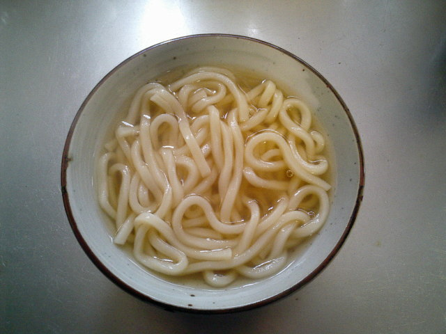

Udon

Descriptions
507 calories; protein 23.7g; carbohydrates 88.1g; fat 6.7g; cholesterol 25.1mg; sodium 1774.6mg.
Ingredients
- 1 ½ (32 fluid ounce) containers chicken stock
- 1 clove garlic, minced
- etc
Steps
- Bring chicken stock, garlic, ginger, and chili powder
to a boil in a pot over medium-high heat. Add chicken,
bok choy, and mushrooms; let simmer lightly for 3 minutes.
Add noodles and cook soup for 4 minutes more.
- Pour soup mixture evenly into 2 soup bowls.
Place mung beans on top in the center of each bowl,
with green onion placed neatly on top.
Sprinkle dried onions and cilantro on top.
- etc